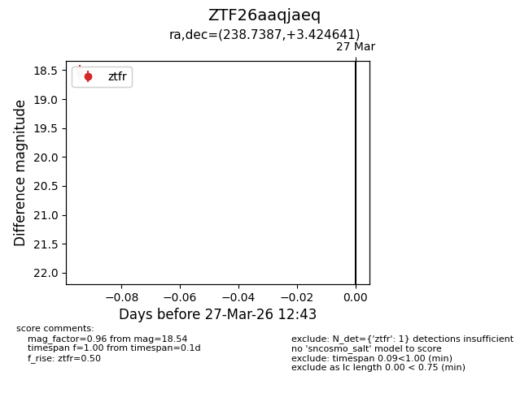
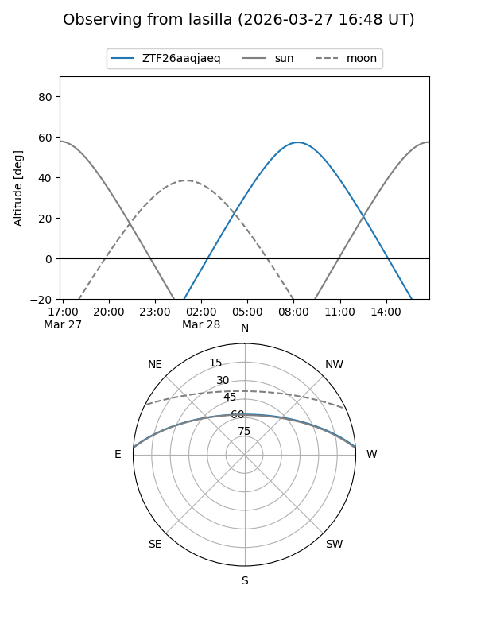
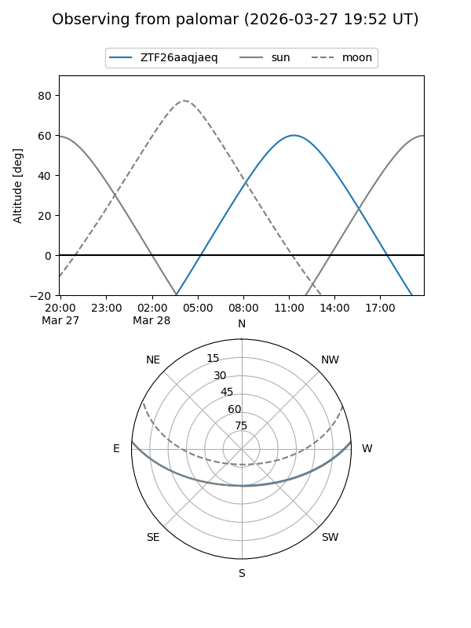

ZTF26aaqjaeq
Target ZTF26aaqjaeq at 2026-03-27 12:45
Aliases and brokers:
FINK: link
Lasair: link
ALeRCE: link
alt names
ZTF26aaqjaeq (ztf,fink_ztf)
Coordinates:
equatorial (ra, dec) = 238.7387,+3.42464
equatorial (HMS+DMS) = 15:54:57.29,+03:25:28.71
galactic (l, b) = (12.7278,+40.21952)
Flags:
Photometry:
last ztfr=18.54
1 ztfr detections
Lightcurve

Visibility


Additional plots